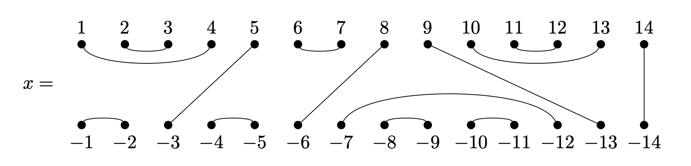

Worksheet
This worksheet contains some exercises to be completed in GAP with the use of the Semigroups package for GAP package as part of the GAP workshop session of NBSAN 40.
-
Let \(J_n\) denote the Jones monoid of degree \(n\), and

-
Find a collection of bipartitions \(\{x_1, x_2, \dots, x_j\}\) such that the tensor product \(x_1 \otimes x_2 \otimes \dots \otimes x_j\) is equal to \(x\). What is the largest possible value of \(j\)? For the definition of the tensor product of bipartitions, see the documentation of the function
TensorBipartition. -
How many elements does \(J_{14}\) contain?
-
How many idempotent elements does \(J_{14}\) contain?
-
How many idempotent elements does the Green's \(\mathscr{D}\)-class of \(x\) in \(J_{14}\) contain?
-
How many idempotent elements \(e\) such that \(7\) belongs to the same part as a negative number does the Green's \(\mathscr{D}\)-class of \(x\) in \(J_{14}\) contain?
-
Same question as the previous part but for irreducible idempotents instead.
Hint
You might find the following functions helpful:
-
-
Recall that the commuting graph of a semigroup \(S\) is the graph with nodes the elements of \(S\) and an edge \((x, y)\) if \(xy = yx\) holds. Let \(\mathcal{T}_n\) be the full transformation monoid on \(n \leq 5\) points. Show that the clique numbers of the commuting graph of \(\mathcal{T}_n\) are \(2 ^ {n - 1}\).
Hint
You can defined \(\mathcal{T}_n\) in GAP using
FullTransformationMonoid, and you can compute the clique number of digraph usingCliqueNumberfunction from theDigraphspackage for GAP. TheDigraphspackage for GAP is required by theSemigroupspackage for GAP so you don't have to install anything new to do this. -
Let \(S\) be the monoid defined by the presentation \(\langle a, b, c, d, e, f, g \mid abcd = a^3ea^2, ef= dg\rangle\).
-
Show that \(S\) is infinite.
-
Create a homomorphism from the free semigroup \(\{a, b, c, d, e, f, g\}^+\) to \(S\).
-
Partition the first \(1000\) elements of the free semigroup \(\{a, b, c, d, e, f, g\}^+\) so that words belong to the same part if and only if they represent the same element of \(S\).
-
-
Is the monoid defined by the presentation $$ \langle x_2, \ldots, x_n\mid x_i^2 = (x_ix_j) ^3 = (x_ix_jx_k)^4 = 1\quad i, j, k \text{ distinct}\rangle $$ the symmetric group for \(n\geq 2\)?
Hint
You might want to use
NumberOfRightCongruences. -
Determine which of the relations in the presentation are redundant and which are not: $$ \langle a, b \mid a^4=1, b^2= b, ba^3ba= a^2(ab)^2, (ba^2)^2= (a^2b)^2, (ba)^2a^2= aba^3b, a(ab)^4= (ab)^4 \rangle. $$ What is the minimal set of the relations in this presentation that define the same monoid?
-
Let \(S\) be the Catalan monoid of degree \(3\).
-
Draw the egg-box diagram of \(S\).
-
Draw the left and right Cayley graphs of \(S\).
-
Show that \(S\) has two non-trivial non-universal non-Rees congruences.
-
Show that the lattice of left and right congruences of \(S\) are isomorphic.
-
What are the maximal subsemigroups of \(S\)? Show that none of the maximal subsemigroup is isomorphic to any of the others.
Hint
You might want to look at:
-
-
Let \(S\) be the dual of the full transformation monoid on 5 points. Find a transformation representation of \(S\) on \(32\) points.
-
The translational hull \(\Omega(S)\) of a semigroup \(S\) is the set of all bitranslations \((\lambda, \rho)\) under componentwise composition. Any element \(s\) of \(S\) induces an inner bitranslation \((\lambda_s, \rho_s)\) of \(S\), where \(\lambda_s(x) = sx\) and \(\rho_s(x) = xs\) for all \(x \in S\). This gives a homomorphism \(\pi_S\) from \(S\) to \(\Omega(S)\). If this is injective, then \(S\) is weakly reductive. Restricting the bitranslations to an ideal \(I\) of \(S\) gives a homomorphism \(\pi_{S|I}\) from \(S\) to \(\Omega(I)\). If \(I\) is weakly reductive, then \(I\) is densely embedded in \(S\) if and only if \(\pi_{S|I}\) is an isomorphism.
-
Determine the size of \(\Omega(I)\) for each ideal \(I\) of \(J_7\) (the Jones monoid of degree 7).
-
Which of the ideals of \(J_7\) are weakly reductive?
-
Which of the ideals of \(J_7\) are densely embedded in \(J_7\)?
-
One such \(\Omega(I)\) is gigantic, and so is certainly not being enumerated. Using\
KnownTruePropertiesOfObject, conjecture how the size is being calculated.
Hint
You might want to look at: Chapter 18 of the
Semigroupspackage manual. -